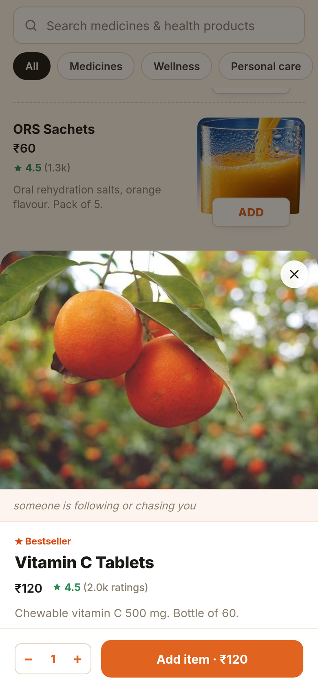

One meaning, many covers
The meanings are fixed in one shared table. Each service only supplies everyday words for them.
| Meaning | Food | Grocery | Pharmacy | Home services | Other servicescab, laundry… |
|---|---|---|---|---|---|
| Someone near you has a weapon | extra pepperoni | a bag of onions | antacid tablets | the air conditioner | premium |
| Someone is following or chasing you | garlic bread | a loaf of bread | vitamin C | the water heater | basic |
| You're hurt and need medical help | extra napkins | dish soap | hand sanitiser | the ceiling fan | deluxe |

Food: Cheesy Garlic Bread

Pharmacy: Vitamin C Tablets
Same hidden meaning
"someone is following
or chasing you"
or chasing you"